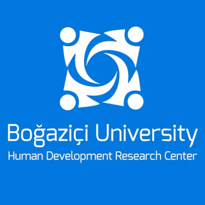

| Ana Sayfa | Program | Kavramsal Çerçeve | Kayıt |
| 9:30 | Hoşgeldiniz |
| 10:00 10:45 | Açılış Konuşması | Konuşmacı: Cemal Kafadar (Harvard Üniversitesi) |
| 10:45 12:30 | I. Oturum: Kampüs ve Şehir |
|
Moderatör: Evren Mehmet Dinçer (Abdullah Gül Üniversitesi) Konuşmacılar:
|
|
| Bu panelde İstanbul’da bulunan dört kampüs örneği üzerinden üniversite ve kentsel mekan ilişkisinin önemi ve bu ilişkide son dönemde yaşanan dönüşümler ele alınacaktır. Siyasi müdahaleler ve kentsel rant beklentilerinin şehir-üniversite etkileşimine, üniversitelerin akademik bütünlüğüne ve tarihsel ve kültürel dokusuna ne gibi etkileri olduğu irdelenecektir. Panelin amacı, bilginin kamuyla katılımcı ve kapsayıcı olarak paylaşıldığı ortamlar olan üniversite kampüslerinin şehir ile ilişkisinin kamu açısından önemini vurgulamaktır. |
| 12:30 13:30 | Öğle Yemeği |
| 13:30 15:30 | II. Oturum: Üniversite ve Yerel Aktörler |
|
Moderatör: Mine Eder (Boğaziçi Üniversitesi) Konuşmacılar:
|
|
| Kentsel mekanın üretimi ve kullanımı, birçok aktörün ve paydaşın çok katmanlı etkileşim, iletişim ve pazarlık süreçleri sonucunda şekillenmektedir. Bu girift ilişkilerin ana belirleyicilerinden birisi de kente dair bilimsel bilgi üreten, kentsel planlamadan sorumlu nitelikli elemanları yetiştiren ve kendi mekansal konumlarıyla kentsel dinamikleri doğrudan etkileme gücüne sahip üniversitelerdir. Bu panelde, üniversitelerin hem kentsel mekan kurgulama hem de kente dair bilgi üretme süreçlerinde, çeşitli yerel aktör ve paydaşlarla etkileşimine odaklanılacak, güncel örnekler üzerinden bu ilişkilerin siyasal ve ekonomik boyutları incelenecektir. Şeffaf, katılımcı, kapsayıcı ve hesap verebilir ilişki ağlarının, hem kentin hem de üniversitelerin demokratik dönüşümüne olan katkıları ele alınacaktır. |
| 15:30 16:00 | Kahve Molası |
| 16:00 17:30 | III. Oturum: Bilgi Üretimi ve Kentler |
|
Moderatör: Ayşe Buğra (Boğaziçi Üniversitesi) Konuşmacılar:
|
|
| Üçüncü panel, "Bilgi Üretimi ve Kentler" başlığı altında, ilk iki oturumdaki tartışma ve aktarımlardan yola çıkarak, hem bugünü anlamaya çalışacak hem de sağlıklı bir üniversite-kent ilişkisi için geleceğe ve yapılması gerekenlere odaklanacaktır. Panelde, bilgi üretiminin ekonomi politiği; üniversiteler ve belediyeler dahil, farklı kurumların kapsayıcılık bağlamında ve veri üretimi, analizi ve paylaşımı açılarından toplum için oynayabilecekleri çeşitli roller ele alınacaktır. Ayrıca, yeni teknolojilerin bu süreçlerdeki artan etkisi, özellikle kamunun denetimini mümkün kılma/engelleme bakımından tartışılacaktır. |
Bilgi ve teknolojilerin hayatımız üzerindeki etkilerini, sosyal yaşamımızı nasıl yeniden şekillendirdiğini görmezden gelmek artık imkansız. Bilginin geleceği tasarlamada ve şekillendirmede, doğal ve insan kaynaklı afetlerle mücadelede ve hatta günlük hayatımızda oynadığı rol her zamankinden daha belirgin bir şekilde kendini göstermekte ve bilgiye erişimin önemi de gün geçtikçe artmaktadır.
Söylemeye gerek yok; bilgi üretimi karmaşık ve çok yönlü bir süreçtir. Temelde gözlem, deneyim ve araştırma sonucu, çeşitli mekanlar ve ortamlar aracılığıyla ve genellikle bir dizi formel ya da enformel sosyal etkileşimden yeni fikirler doğar ve paylaşılır. En yaygın bilgi üretim merkezlerinden biri de kuşkusuz üniversitelerdir; barındırdıkları insan sermayesi ve geniş uzmanlık yelpazesi onları bilgi üretiminde merkezi bir konuma yerleştirir. Dersler, seminerler, araştırma projeleri ve laboratuvar çalışmaları gibi etkinliklerde yeni bilgiler ve bunlar üzerine temellendirilen yeni teoriler geliştirilir; bunlar yayınlar ve toplantılar aracılığıyla farklı ortamlarda dolaşıma girer. Bilgiye herkesin eşit erişimi ise toplumların daha demokratik, adil ve kapsayıcı hale gelmesinde kritik bir rol oynar. Kentler tam da bu noktada önemli bir role sahiptir, çünkü bizlere bilgi ve kültürün katılımcı şekilde birlikte üretilebildiği, paylaşıldığı ve değişime uğradığı dinamik ortamlar sağlarlar.
Boğaziçi Üniversitesi Akademisyenleri olarak bu konferans dizisini başlatırken sağlıklı bilgi üretiminin koşullarını derinlemesine tartışmayı; kentlerimizi ve üniversitelerimizi birbirleriyle etkileşim içerisinde bilgi üretiminin ev sahipleri olarak düşünmeyi; bilgi üretimi-üniversite-kent ilişkileri bağlamında günlük yaşamımıza etki eden ve geleceğimizi şekillendiren çeşitli konuları ele almayı planlıyoruz.
Bu konuları tartışırken de kentlerin ve yerel yönetimlerin bilgi üretiminde artan işlevlerine vurgu yapmak; sağlıklı üniversite-kent ilişkilerinin nasıl daha iyi geliştirilebileceği üzerine birlikte düşünmek istiyoruz. Neticede üniversiteler ve yerel yönetimler, sosyal, kültürel ve teknolojik bir dönüşüm hamlesinde değişimin önderliğini üstlenebilecek, öğrenciler ile halkı, bilgi üretimi ile sanayiyi bir araya getirecek imkanları yaratabilecek öncelikli konuma sahiptirler.
İstanbul'dan başlayarak çeşitli kentlerde birer günlük toplantılar çerçevesinde planladığımız ve şehir dışındakilerin de takip edebilmesi için hibrid olarak organize edilecek konferans dizisinin taslak ana başlık önerileri aşağıdadır.
Bu başlıklar farklı kentlerde ele alınacak; her konferansın ana teması ve yapısı toplantının yapılacağı kentte, organizasyonu yapan ev sahibi üniversite ile birlikte kurgulanacaktır.
B.Ü. İnsani Gelişme Uygulama ve Araştırma Merkezi |
|  |
Boğaziçi Üniversitesi Nafi Baba Binası, Istanbul, 34470, Türkiye
dusunen.sehir.konferansi@gmail.com